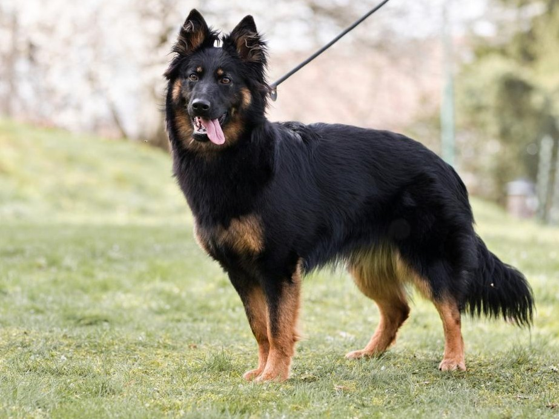
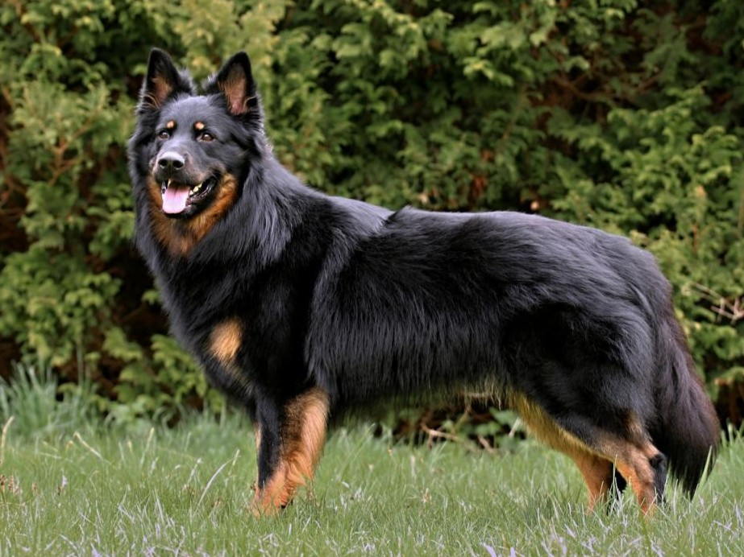

Naše štěňátka odcházejí do nových domovů nejdříve v 50. dni věku. Budou plně socializovaná v rodinném prostředí, zvyklá na lidi, děti i běžný chod domácnosti. Při odchodu budou očkovaná, odčervená, čipovaná, s vystaveným mezinárodním pasem a průkazem původu FCI.
Pro naše odchovy hledáme zodpovědné majitele, kteří jim poskytnou milující domov. Doživotní chovatelský servis je pro nás samozřejmostí.
Předpokládané narození: Červenec 2026 | Předpokládaný odběr: Září 2026

Matka: Čiperka
Otec: Baltazar Noční hlídka
Výsledky: DKK B, DM: G/G
Ocenění: Výborná 4 (V4)
Zkoušky: FCI-BH/VT
Bonitace: A2, K3, W2 (Chovná fena)
Profil v rodokmenu KPCHP ↗
Výsledky: DKK A, DLK 0/0, DM: N/N
Ocenění: Český šampion, Výborný, 3x CAC, Národní vítěz
Zkoušky: (viz databáze)
Bonitace: A1, I1, K2, W2/B1 (Chovný pes)
Profil v rodokmenu KPCHP ↗
U štěňátek z tohoto spojení očekáváme vynikající zdraví, bohatou srst se sytými znaky a vyrovnanou, aktivní povahu.